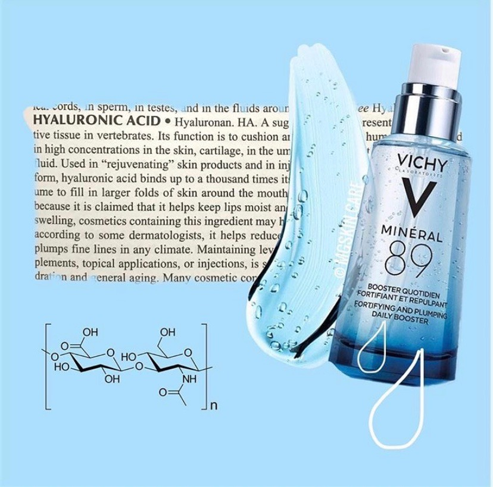
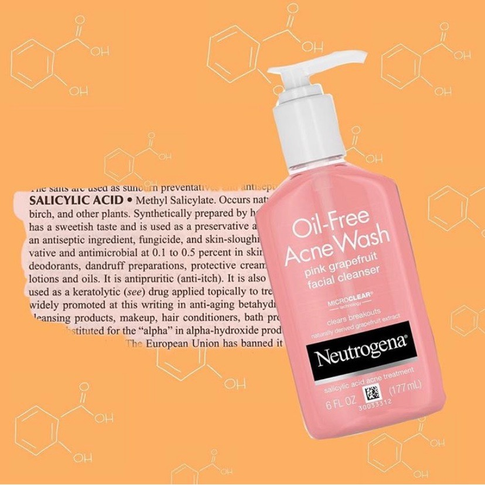
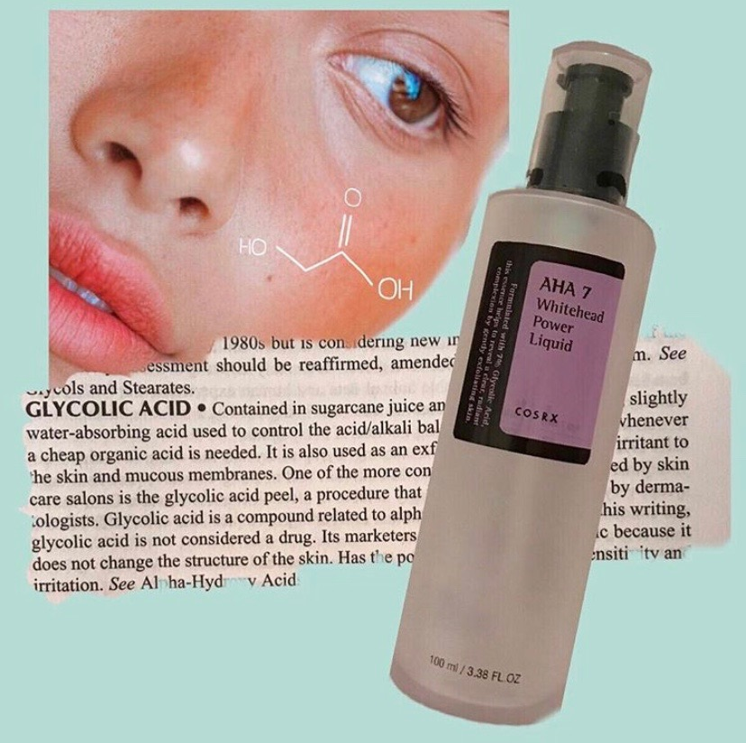

Clean & Clear

About Clean & Clear
We were founded in 2018 in New York City. We are here to enhance your appearance that includes nutrients that will help your skin. CC has all the details on the it products that will help your skin. We are based in Miami, New York, and Boston.
Products
Hey Dolls! We are so excited to give you guys the 411 on skin care. You are going to love our products! Our products are made with all natural oils and scents. We encourage you all to keep a dedicated daily routine that will rejuvenate your skin.
Product Gallery
Blog
Whats in the bottle? We are here to educate you and inform you what you are putting on your face. This guide will give you the low down on products that will benefit your skin. If you want us to answer any questions please email us at ccproducts@gmail.com
Hyaluronic Acid
A sugar compound present in all connective tissues in vertebrates. It acts as a lubricant. It is found in high concentrations in skin for example, cartilage. It will help rejuvenate your skin. It is very water based and will help replenish dry damanged areas.
Salicylic Acid
This acid workds by removing dead skin cells that are clogging pores. It occurs naturally in wintergreen leaves. It is used as a persevative in prodcuts such as face masks and deodorant.
Glycolic Acid
It is found in surgarcane juice and controls the PH level when in products. It is a great exfoliant but can be harsh on sensetive skins.